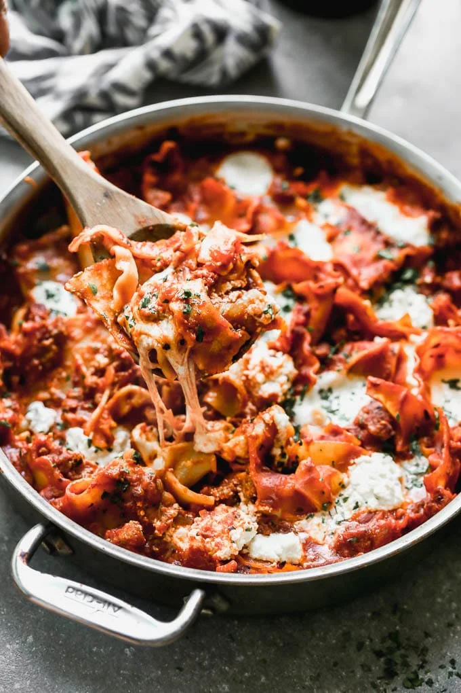

Deconstructed Lasagna
Note: Recipe from Cooking for Keeps.

Dish Description
One Pot Deconstructed Lasagna is an easier, faster way to comforting lasagna! This is packed with an easy homemade red sauce, salty sausage, creamy ricotta cheese, and of course, plenty of gooey mozzarella cheese. It’s the perfect way to enjoy lasagna any day of the week.
Ingredients
- 1/2 lb bulk sausage
- 1/2 medium onion, diced
- 3 large garlic cloves, minced
- 1 tbsp fennel seeds
- 2 tsp kosher salt, divided
- 1/2 cup red wine
- 2 tbsp tomato paste
- 24 oz jarred seedless strained tomatoes or canned crushed tomatoes
- 2 tsp garlic powder
- 2 tsp onion powder
- 1 tbsp sugar
- 2 tsp dried basil
- 2 cups water
- 10 lasagna noodles
- 1/2 cup whole-milk ricotta cheese
- 8 oz fresh mozzarella cheese, either cut into bite-sized pieces or bought in small balls
Steps
-
Preheat oven to 425 degrees. Add sausage to a large skillet. Cook over a medium heat, breaking up the sausage with a wooden spoon. Once the sausage is about halfway done cooking, add the onion, garlic, and 1/2 teaspoon salt. Continue to cook until onions are soft, about 3 minutes. Add red wine. Bring to a boil and reduce to a simmer. Simmer until reduced by half. Scrape up any brown bits with a wooden spoon.
-
Whisk in tomato paste, tomato puree, remaining salt, garlic powder, onion powder, sugar, basil, and water. Bring to a boil and reduce to a simmer. Simmer for 5 minutes. Taste the sauce and season with salt and pepper.
-
Break up lasagna noodles and add them to the sauce. Stir. Bring to a boil and reduce to a simmer. Cover and cook until noodles are aldente. Stir every five minutes to prevent the noodles from sticking. If it looks like the noodles need a little bit extra liquid, add 1/4 cup of water.
-
Once the noodles are aldente, give them a stir. Spoon tablespoons of ricotta in pockets of the noodles. Make sure it's evenly distributed. Do the same for the mozzarella. Put the whole skillet in the oven, uncovered. Bake until the cheese has melted. Serve immediately.